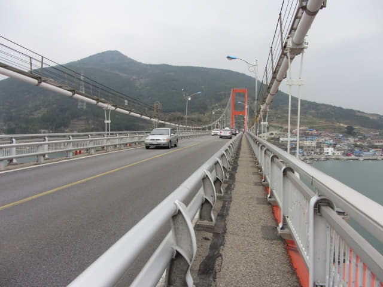

沿南海郡露梁港畔步道一直走, 經過南海忠烈祠、龜甲船及熱鬧的商業區, 穿過一個停靠了很多旅遊車的廣場, 再往前走, 優美紅色的南海大橋就在前面, 驟眼一看, 有點像美國三藩市的金門大橋, 雖然已經接近三十年了, 但印象仍然十分深刻, 尤其是當年創業跑到美國及加拿大的雄心, 真不明白, 已經過了那麼多年, 一切已成過去, 到現在還是念念不忘的; 或許, 這決定對我的一生影響實在太大。
南海大橋 (남해대교)
南海大橋是連接韓國慶尚南道河東郡與南海郡的一座懸索橋, 跨越露梁海峽, 大橋全長六百六十米, 於一九七三年六月二十二日開通, 是亞洲第一座懸索橋。

南海大橋真是很優美。
南海大橋下有一條通往山坡上的陡斜步道, 估計是往橋頭的, 便往上走去。
沿步道往上走, 越來越接近南海大橋。

步道彎曲蜿蜒而上。

哈哈~~~ 走到山坡上, 這裡便是南海大橋的橋頭, 可以從這裡步行往對岸的河東郡!
南海郡沿南海大橋步行到對岸河東郡
接著我們便從南海郡沿南海大橋, 穿越露梁海峽到對岸的河東郡。
步上南海大橋, 可清楚俯瞰橋下景色。
我們剛才便是沿南海郡露梁港畔及山坡中的步道走來這裡的。
走了一會, 風勢十分猛烈, 橋上的旗幟悉悉索索的呼嘯著, 身體也被吹得左右擺動。她害怕被吹落橋下, 低頭彎腰匆匆走到對岸, 不一會便消失了蹤影。我要拍照, 還是慢慢的走。
站在南海大橋上欣賞南海郡露梁港, 更美!

可清楚看到露梁-枉地櫻花路從拘頭山上盤繞而下, 一直伸延到南海郡露梁港畔。
繼續冒著強風向前走, 離對岸的河東郡越來越近了!

回頭望望南海郡, 感覺差不多在橋的中央。
繼續向前走。
突然想起, 沒理由不在南海大橋上拍照留念吧! 便唯有冒險將相機放在橋上自拍一張, 相機險些兒給大風及經過汽車的震動跌落橋下, 幸好及時撲前握著。太危險了, 整個旅程的照片就在裡面! 怕怕啦! 一次已經足夠, 以後千萬不要這樣!
河東郡
差不多來到另一邊的橋頭。
河東郡的村落已經在腳下。來到河東郡了!
就這樣來到南海大橋對岸河東郡的橋頭。天色十分昏暗, 所有汽車都亮了車頭燈。